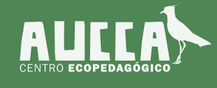

Centro Eco-Pedagógico
☰
Inicio
Escuela
Talleres
Visitas
← Volver
Todo
AUCCA y general
Baño seco
Biofiltro
Compostaje
Escuela y talleres
Buscar
Consejo: entiende sinónimos (ej.: “inodoro seco” → baño seco).
üí° Puedes preguntar:
üåø Ver temas disponibles